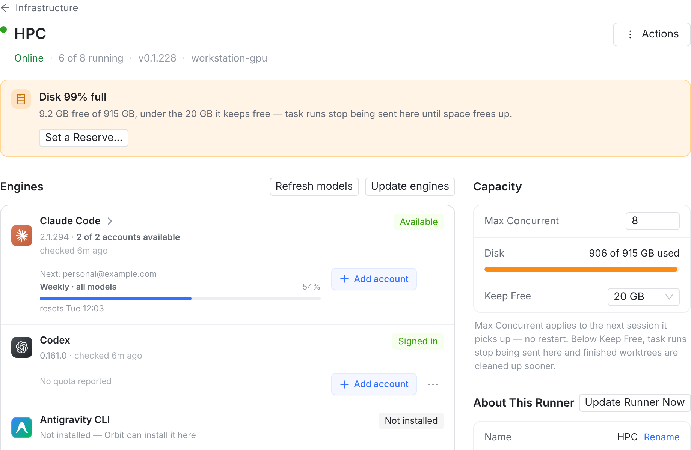
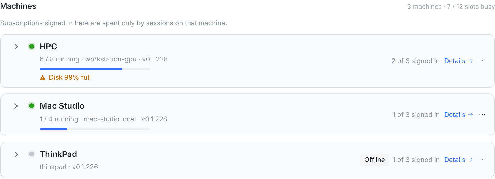
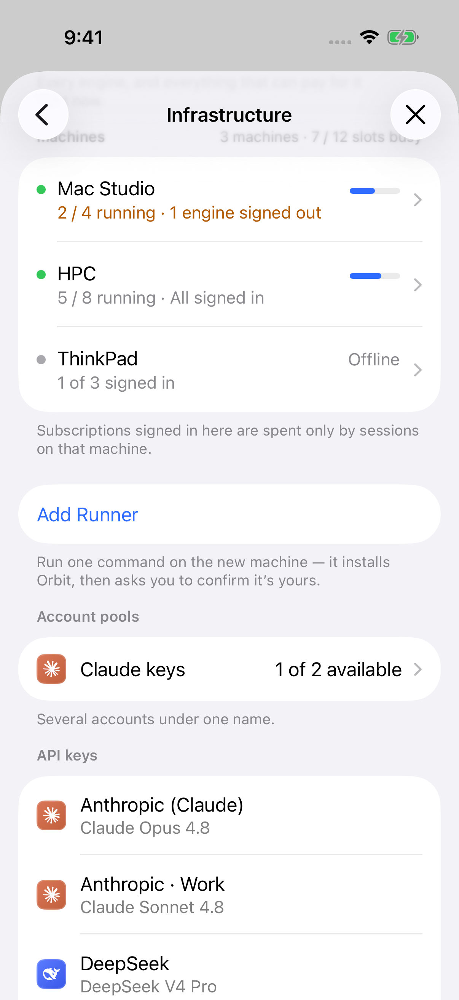
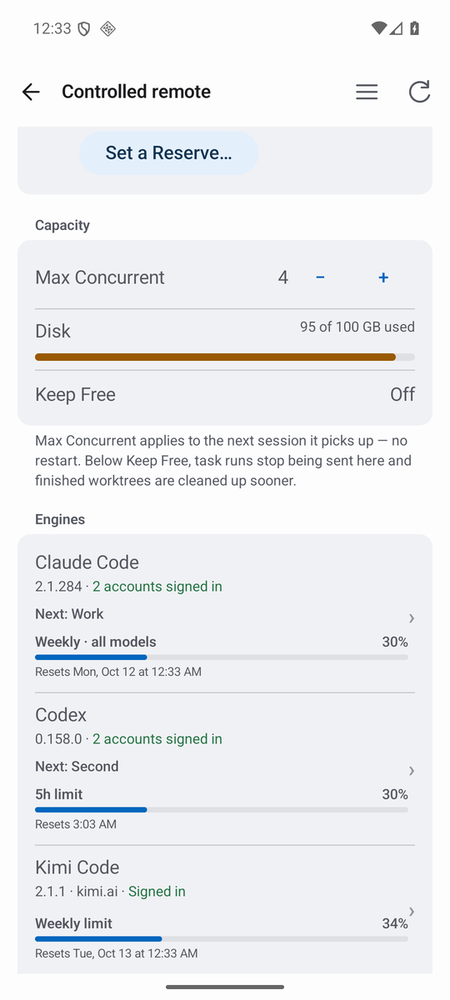
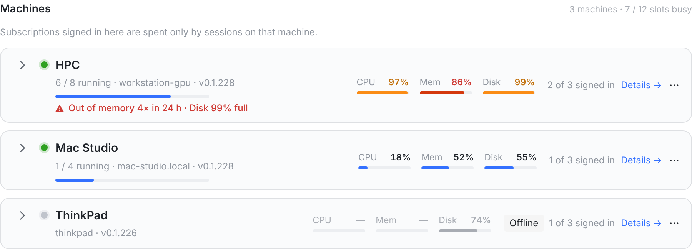
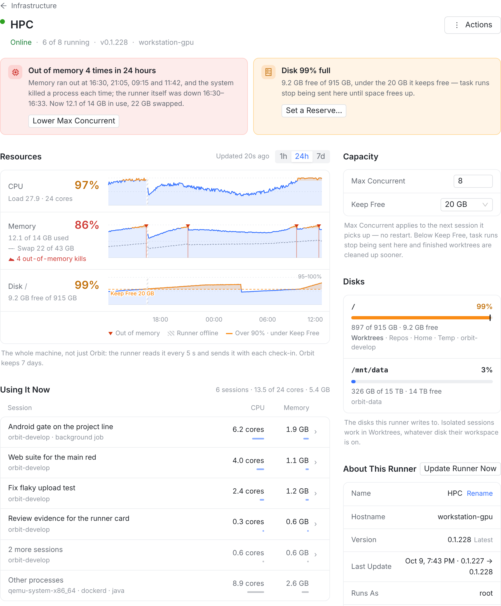
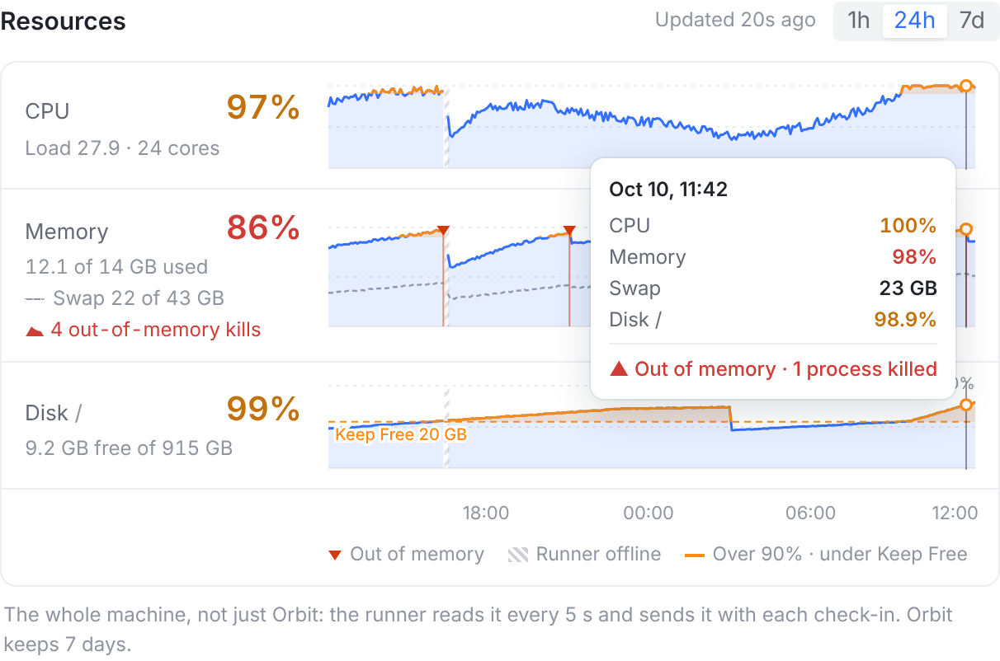

现在 runner 只报一样东西：每个工作区目录所在那块盘还剩多少，客户端从里面挑最紧的一块画成 Capacity 里的 Disk 条。CPU、内存一个数都没有，也没有历史。
HPC 今天 12:03 的真实状态：24 核 load 27.9；14 GB 内存只剩 2 GB 可用，swap 用了 22 / 43 GB；开机 7.5 天内核因内存不足杀了 33 次进程，昨天 16:30 那次把 runner 一起停掉了（服务是 OOMPolicy=stop），3 分钟后才回来；/ 897 / 915 GB。这些在 Orbit 里一个都看不到，只能 ssh 上去查。

~/.orbit/worktrees，那块盘如果没有工作区目录在上面，根本不报。心跳每 30 s 一次、本来就会改写 runner 那一行，三端也本来每 15 s 拉一次 GET /runners——加这些数不需要新的通道。



只加三块，不改现有布局：机器卡片头上三根小条；机器页主栏最上面 Resources（现在的数 + 曲线）和 Using It Now（谁在用）；侧栏 Capacity 的 Disk 一行展开成 Disks（每块盘一行）。下面三张都是真实页面，把新的部分插进去截的。


/data（NFS，87%）Orbit 不写，就不列。
iPhone 和 Mac 是同一套 SwiftUI（Mac 在右侧详情栏里，图更宽）。机器行加三根条；机器页加一节 Resources，点进去是 Resources 页：大图、每块盘、谁在用。曲线用系统自带的 Swift Charts（iOS 17 / macOS 14 都有）。
结构和 iPhone 一样：Settings → Runners 的每台机器加三根条；机器页加 Resources 一节；点进去是 Resources 页。曲线用 Compose Canvas 自己画（App 里没有图表库，也不需要引）。
什么时候变色、什么时候进 Needs Attention、文案怎么写，三端只有一份：
runnerAttention.ts，Swift 的 RunnerAttention、Kotlin 的 RunnerPage 各镜像一份，三边都对着 runnerAttention.cases.json 跑测试——今天的磁盘提醒就是这么做的。runnerCopy.ts，Swift / Kotlin 的对照测试直接读它。GET /runners；曲线只在 Resources 打开时拉，60 s 一次。runner 每 5 秒读一次本机，攒成「每分钟一条」，跟着现有的 30 秒心跳送上去；服务端存「此刻」和「每分钟」两份；三端照旧轮询。不新开连接，不加 runner 依赖（runner 是纯 Go 标准库、CGO_ENABLED=0）。
/proc/stat 两次之差；load：/proc/loadavgMemTotal − MemAvailable；swap/proc/vmstat 的 oom_kill 增量statfs 一次，按设备去重/proc/<pid>/stat 求和resources：此刻的数 + 没送出去的分钟汇总（断线时最多攒 60 分钟，回来一次补齐）+ 各会话用量。约 1–2 KB。runner.resources（JSON）：此刻的数，和 lastHeartbeatAt 走同一条 UPDATE，不多一条语句runner_resource_minute：每台每分钟 1 行（平均 + 最高 + OOM 次数 + 各盘已用），像 PoolUsage 账本那样攒 2 s 一批写；保留 7 天，每小时清一次 → 每台约 1 万行resourcesGET /api/runners 每台多带 resourcesGET /api/runners/:id/resources?range=1h|24h|7d 返回曲线（1 / 5 / 30 分钟一个点）GET /runners）| 指标 | Linux | macOS | Windows |
|---|---|---|---|
| CPU % | 整机所有核，/proc/stat | 每分钟一次 top -l 2 -n 0（不用 cgo） | 不报 |
| Load | /proc/loadavg | sysctl vm.loadavg | — |
| 内存 | 总量 − 可用（缓存不算用掉） | hw.memsize + vm_stat | — |
| Swap | SwapTotal − SwapFree | vm.swapusage | — |
| OOM | oom_kill 增量 | 没有对应物（先压缩、换页） | — |
| 盘 | statfs，可用 = Bavail（和今天一样，不算 root 预留）；Linux 另报 inode 用量，≥ 80% 才显示 | 不报（同今天） | |
| 谁在用 | /proc/<pid> | ps -o pid,pgid,%cpu,rss | — |
| 容器内 | 托管 runner 的 pod：总量取 cgroup 的 memory.max / cpu.max，不拿节点的数 | ||
// 心跳里新增的字段（示意）"resources": { "at": "2026-10-10T04:03:20Z", "cpu": { "cores": 24, "busyPct": 97.2, "load": [27.9, 26.3, 27.4] }, "memory": { "totalBytes": 15032385536, "usedBytes": 12992153600, "swapTotalBytes": 46170898432, "swapUsedBytes": 23622320128 }, "oomKills": 33,// 开机以来，服务端算增量"disks": [{ "mount": "/", "totalBytes": 982473277440, "freeBytes": 9878424166, "inodesUsedPct": 18, "holds": ["worktrees", "repos", "home", "temp", "workspace:…"] }], "minutes": [{ "at": "…04:02:00Z", "cpuAvg": 96.1, "cpuMax": 100, "memAvg": 85.9, "memMax": 87.0, "oomKills": 0, … }], "sessions": [{ "sessionId": "…", "cpuCores": 6.2, "rssBytes": 2040109465 }], "other": { "cpuCores": 8.9, "rssBytes": 2791728742, "top": ["qemu-system-x86_64", "dockerd", "java"] } }
Out of memory（红）：24 小时内有 OOM 杀进程。按钮 Lower Max Concurrent。
Memory 9x% used（琥珀）：5 分钟平均 ≥ 90%，且没有 OOM。
Disk 99% full（已有）：低于 Keep Free；没设时剩不到 10%。改为看 Disks 里每一块盘。
CPU：不进 Needs Attention，5 分钟平均 ≥ 90% 时条变琥珀（见待定 ③）。
成本：runner 每 5 s 读几个 /proc 文件；每 30 s 扫一遍进程（HPC 上约 4,000 个，几十毫秒）。服务端每次心跳不多语句，分钟表一天每台 1,440 行。
「监控」的另一半是回头看：昨天 16:30 runner 为什么停了、HPC 是不是每天下午都满。
runner_resource_minute，每台每分钟 1 行，7 天约 1 万行；每小时清一次。CPU 100% 时，下一个问题一定是「谁」。runner 本来就把每个会话放在自己的进程组里管着（停会话时整组杀），多算一次 CPU 和内存就有了。
今天磁盘有拦截（低于 Keep Free 就不再自动派任务）。内存、CPU 要不要也拦？HPC 一整天 load 27.9 / 24 核、内存 86% 加 22 GB swap——按阈值拦，它大半天都派不了活。
现在的拦截只比「工作区目录所在的盘」，可开了 worktree 的会话写在 runner 自己的 ~/.orbit/worktrees。工作区在大盘、home 在小盘的机器（比如工作区放 /mnt/data，home 在 /）：小盘满了照样派，派过去的会话再写满它。
resourcesrunner/proc 目录喂数。runner.resources 列 + runner_resource_minute 表（迁移号先扫各分支，现在最大 0421）+ 每小时清理；GET /runners 带此刻的数，GET /runners/:id/resources 返回曲线。新表要过五个普查：db-write inventory、PUBLIC_ID_FIELDS、迁移台账、租户隔离、PAT scope。runnerAttention（Web）/ RunnerAttention（Swift）/ RunnerPage（Kotlin）加 OOM、内存、多盘；runnerAttention.cases.json 加用例；英文文案进 runnerCopy.ts。diskBelowFloor 和 runner 的 belowFloor 一起改：开了 worktree 的工作区取两块盘里更紧的。nvidia-smi）；runner 被 OOM 连带停掉时，重启后说明原因。建议：1–3 先做（数据和规则一个任务），4 / 5 / 6 三端并行，7 看 ④；整件事 6–7 个任务，适合开一个 Orbit 项目。